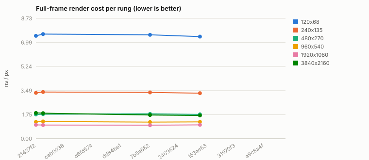
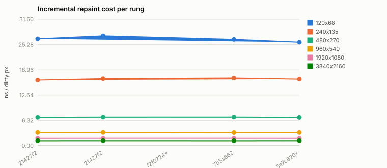
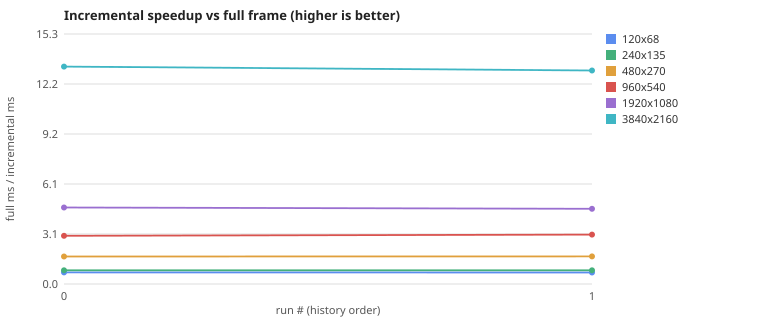

The F18 rig (#18)
drives a frame-indexed parametric scene — slider sweep, toggle blink, a disc
crossing clip boundaries, a digits-only frame counter, the checker asset
translating — rendering every frame BOTH ways (full, and incrementally via
dirty rects) with per-frame byte-equality asserted, at six resolutions from
120×68 to 4K (3840×2160). Numbers are medians (vyr-bench methodology);
the committed regression goldens are the FNV-1a frame-hash chain
(vyr-rig/hashchain.json) and the ns/px baselines
(vyr-rig/baseline.json). This page regenerates from the
append-only history.jsonl via
./dev.py perf-history.
7b5a662 · 2026-06-12T13:34:16Z| rung | full ms | ns/px | ×60fps | incr ms | ns/dirty-px | ×60fps | dirty | speedup |
|---|---|---|---|---|---|---|---|---|
| 120x68 | 0.062 | 7.54 | 270.83× | 0.085 | 26.59 | 195.53× | 39.3% | 0.7× |
| 240x135 | 0.109 | 3.36 | 153.10× | 0.133 | 16.89 | 125.53× | 24.3% | 0.8× |
| 480x270 | 0.233 | 1.80 | 71.46× | 0.137 | 7.18 | 121.46× | 14.8% | 1.7× |
| 960x540 | 0.624 | 1.20 | 26.72× | 0.212 | 3.24 | 78.44× | 12.6% | 2.9× |
| 1920x1080 | 2.020 | 0.97 | 8.25× | 0.448 | 1.82 | 37.23× | 11.8% | 4.5× |
| 3840x2160 | 14.253 | 1.72 | 1.17× | 1.169 | 1.23 | 14.26× | 11.5% | 12.2× |
×60fps = headroom vs the 16.67 ms budget (>1 fits). The 4K story the ladder exists to tell: the incremental path is where 60 fps @ 4K lives.
Latest anim acceptance: 60 frames @ 480×270, run hash 0x75f4a4e8bf96dfb3, dirty 14.2%/step, 0.84 ms/frame (full + incremental + byte-verify + PNG dump, host wall clock).
Cross-ISA rung (qemu-arm-static, ARMv7 musl static build): ✅ byte-identical across 600 frames; TCG plugins unavailable on this host (no insn counts — emulated wall time is NON-target-indicative).



2026-06-11T10:58:19Z · 21427f2 · selwyn (x86_64)2026-06-11T11:03:51Z · 21427f2 · selwyn (x86_64)2026-06-12T13:34:16Z · 7b5a662 · selwyn (x86_64)Host wall-clock numbers are desktop-host numbers; the embedded story is measured separately (F9). Anything emulated is labelled NON-target-indicative — QEMU measures the host, never the F427.